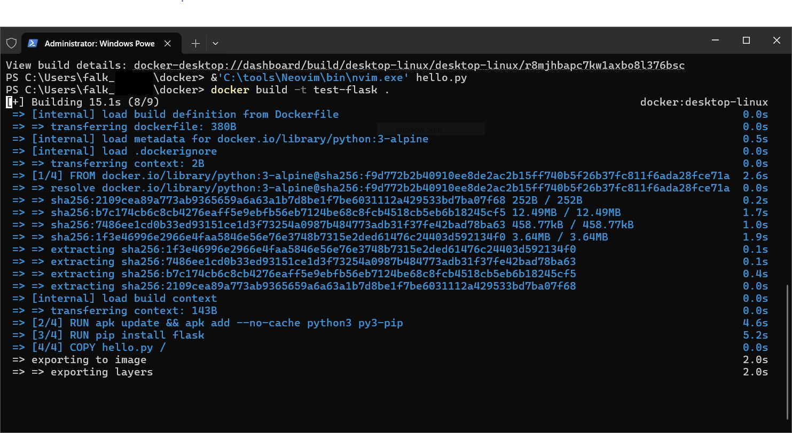
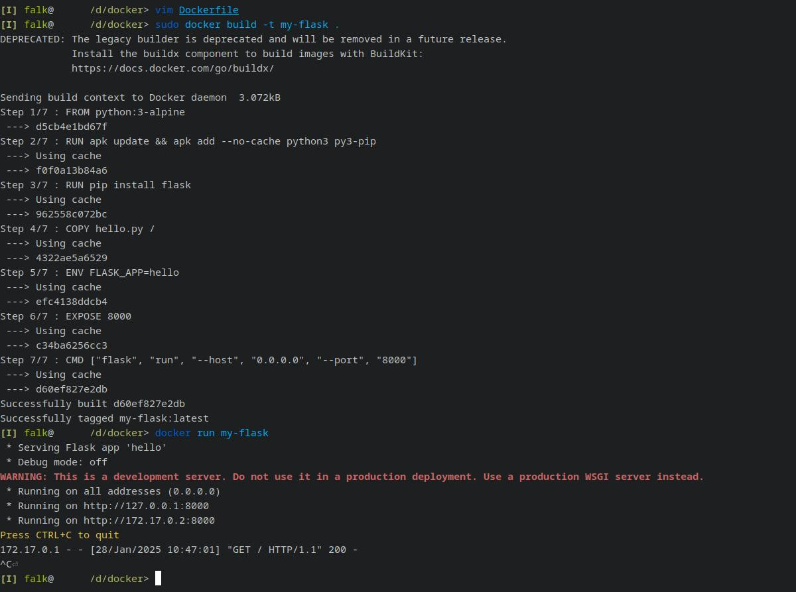

Containers (3): Building Custom Containers
How to customize and extend containers with Dockerfiles and the `build` command.
By now, you will have successfully installed Docker or Podman. You hopefully succeeded in running others’ containers, e.g. from a container repository.
Next, it is time to customize your container.
To give you a metaphor to work on: imagine you have a nice little DIY project for your garage workshop. This time, you would like to build your own Matryoshka dolls (матрёшка, stacking dolls, a great allegory for recursion).

Like all good DIY, you do not fully start from scratch: you start with a blueprint which someone else has created, or general building instructions. You usually do not grow your own trees to get the wood, you buy wooden blocks of approximately the right size; neither do you mix paint from elemental ingredients, you assemble what others have to offer. But with those ingredients, you customize your making and end up with a very individual creation which, ideally, is exactly what you had in mind.
Customizing container images with the build command is the same business.
Start from an image someone else prepared, as close as possible to your outcome.
Add extra ingredients, few of them are innovative.
Sprinkle in your own files for customization.
The result is a container with a set of components which noone else might have ever used.
With Docker Desktop, you have the graphical interface for “builds”. This might fall under the extended functionality which requires a login.
Yet even without a login, you can proceed via a terminal, as below.
Once you create a Dockerfile and build it, it will appear in the GUI.

Simple Example: A Webserver with Python/flask
Rationale
Matryoshka dolls only work because the internal dolls are smaller than the ones covering them. In terms of software, size is a rather abstract metric, but you might think of different layers as “wrappers” around other elements.
For example, flask is a wrapper for other tools, and it is a library within the Python ecosystem.
In this chapter, you will learn how to wrap flask in a container.
Init: What is a flask
Python flask is a library which allows you to execute Python scripts upon web access by users.
Though I will not go into details, know that flask is a useful library for interactive website functions.
For example, you can use flask to gather information a user provides in an html form, then process and store it wherever you like.
I started from the following examples and tutorials to spin up a flask container, but provide modifications and comments on the steps.
- https://docs.docker.com/build/concepts/dockerfile
- https://medium.com/@geeekfa/dockerizing-a-python-flask-app-a-step-by-step-guide-to-containerizing-your-web-application-d0f123159ba2
It all starts with a Dockerfile.1
As you will see, the Docker file will give you all the design choices to create your own containers.
I think of the Docker file as a script which provides all the instructions to set up your container, starting with FROM (i.e. which prior container you build upon) to RUNning any type of commands.
Not any type, really: we are working on (mysterious, powerful) Linux - don’t fret, it is easier than you think!
To our python/flask example.
A list of the official python containers is available here.
Note that you build every container upon the skeleton of an operating system: I chose Alpine Linux.
(It’s en vogue.)
The Dockerfile resides in your working folder (yet it also defines a WORKDIR from within which later commands are executed).
- Navigate to a folder in which you intend to store your container(s), e.g.
cd C:\data\docker(Windows) orcd /data/docker(Linux). - Create a file called
Dockerfile:touch Dockerfile. - Edit the file in your favorite text editor (
vim Dockerfile; Windows users probably use “notepad”). - Paste and optionally modify the content below.
# Use the official Python image (Alpine Linux, Python 3)
FROM python:3-alpine
# install app dependencies
RUN apk update && apk add --no-cache python3 py3-pip
RUN pip install flask
# install app
COPY hello.py /
# final configuration
ENV FLASK_APP=hello
EXPOSE 8000
CMD ["flask", "run", "--host", "0.0.0.0", "--port", "8000"]
Note that the following hello.py file needs to be present in your working directory (you will be reminded by a friendly error message):
from flask import Flask
app = Flask(__name__)
@app.route("/")
def hello():
return "Hello, INBO!"
With the Dockerfile and hello.py in place, you can build the container 2.
# on Windows, you are already in an administrator terminal
docker build --pull -t my-flask .
docker build --pull -t my-flask .
On Linux, you might need to use sudo if the user is not in the docker group, like so: sudo docker build -t my-flask.
Using --pull is good practice to ensure the download of the latest upstream containers; you could even use --no-cache to avoid previous downloads altogether.
The -t parameter will “tag” the image at build time, auto-generating extra metadata.
Also, some variants can omit the final dot ("."), others require it; the dot is just a Linux shorthand reference to the current working directory (i.e. where your Dockerfile resides).

List your available container images via the docker images command.
You should now see a python image, which is the base alpine image we built upon.
There is also a my-flask.
Try it!
docker run my-flask
The terminal should give you an IP and port; because the flask runs in a container, localhost:8000 will not work out-of-the-box.
Instead, in my case, it was http://172.17.0.2:8000.
(Sadly, although I could build and run this container on windows, I did not get through via the browser 🤷 but try with port mapping -p 8000:8000.)
flask on top of it.
This works via writing a Dockerfile and building an image.
Multiple Images: compose versus build
The above works fine for most cases. However, if you want to assemble and combine multiple images, or build on base images from multiple sources, you need a level up.
In that case docker compose is the way to go.
On Debian or Ubuntu, this extra functionality comes with the docker-compose-plugin.
I did not have the need to try this out, yet, but will return here if that changes.
Application: RStudio With Packages
Rationale
A Python flask might not be your kind of Matryoshka doll, if you are mainly concerned with heavy R scripting from within your familiar RStudio environment. To re-iterate: containers are immensely flexible, and images are available for a multitude of situations.
With the general tools presented above, we should be able to apply the above to modify the rocker/rstudio server image for our purpose.
Build recipes for some of the INBO packages you might want to include are collected in this repository:
Contributions are much appreciated!
Dockerfile
This use case is, in fact, well documented:
- https://rocker-project.org/use/extending.html
- https://rocker-project.org/images/versioned/rstudio.html
- https://davetang.org/muse/2021/04/24/running-rstudio-server-with-docker
The Rocker crew rocks!
They prepared quite a lot of useful images, including for example the tidyverse or geospatial packages.
Note the syntax in FROM: it is rocker/<image>:<version>.
FROM rocker/rstudio:latest
# (Use the rocker rstudio image)
# update the system packages
RUN apt update \
&& apt upgrade --yes
# git2rdata requires git
RUN apt-get update \
&& apt-get install -y --no-install-recommends \
git libgit2-dev\
&& apt-get clean
# update pre-installed R packages
# RUN Rscript -e 'update.packages(ask=FALSE)'
# copy a `.Rprofile` to the container
# available here: https://tutorials.inbo.be/installation/administrator/admin_install_r/Rprofile.site
COPY docker/.Rprofile $R_HOME/etc/Rprofile.site
# install package via an R command (`R -q -e` or `Rscript -e`)
# (a) from pre-configured repositories
RUN Rscript -e 'install.packages("git2rdata")'
# (b) via r-universe
RUN R -q -e 'install.packages("watina", repos = c(inbo = "https://inbo.r-universe.dev", CRAN = "https://cloud.r-project.org"))'
# (b) from github
RUN R -q -e 'install.packages("remotes")'
RUN R -q -e 'remotes::install_github("inbo/INBOmd", dependencies = TRUE)'
It takes some puzzle work to get the dependencies right, e.g. with the libgit2 dependency (try commenting out that line to get a feeling for build failure).
However, there is hope: (i) the error output is quite instructive (at least for Linux users), (ii) building is incremental, so you can add successively.
It just takes patience.
As a shortcut, consider using pak (from r-lib) or r2u (apt repository) to implicitly deal with the system dependencies.
Generally, remember which system powers your container (Debian/Ubuntu), find help online, and document your progress.
Dockerfiles offer some room for optimization.
For example, every RUN is a “Layer”; you should put stable layers top and volatile layers later.
In principle, it is recommended to combine layers as much as possible.
More here: https://docs.docker.com/build/building/best-practices
Test the image:
docker build -t test-rstudio .
Run it, as before:
docker run --rm -p 8787:8787 -e PASSWORD=YOURNEWPASSWORD test-rstudio
Another good practice is to extract modifications in scripts and modularly bring them in to be executed upon installation (see here, and here), via COPY.
This exposes them to a more refined version control on the host machine.
As you know, version control is key!
Summary
Like a Matryoshka doll, software often comes in layers, as I have tried to illustrate in the examples above. When designing and building Dockerfiles, you effectively craft your own DIY Matryoshka. This may involve tinkering, some sawdust will fall off on the sides, but often the end product is quite presentable.
And that is one of the main purposes of a custom docker image: you can store a given set of interrelated software building blocks for later use (reproducibility). Some of these sets are rather rough, abstract, or general (like the images you get on image repositories, which you can simply pull and run). Others are bespoke, containing exact requirements for a given task. Both functions are important building blocks of open science, and I elaborate more about this framework in the main article on containerization. Docker is a specific implementation of the container concept, and you might also want to try out Podman as an alternative.
Good luck with all your DIY projects, and thank you for reading!
-
Here I quoted the docs (https://docs.docker.com/build/concepts/dockerfile) before having read them. ↩︎
-
If you did not install the
buildxpackage on Linux, you will read a legacy warning. ↩︎